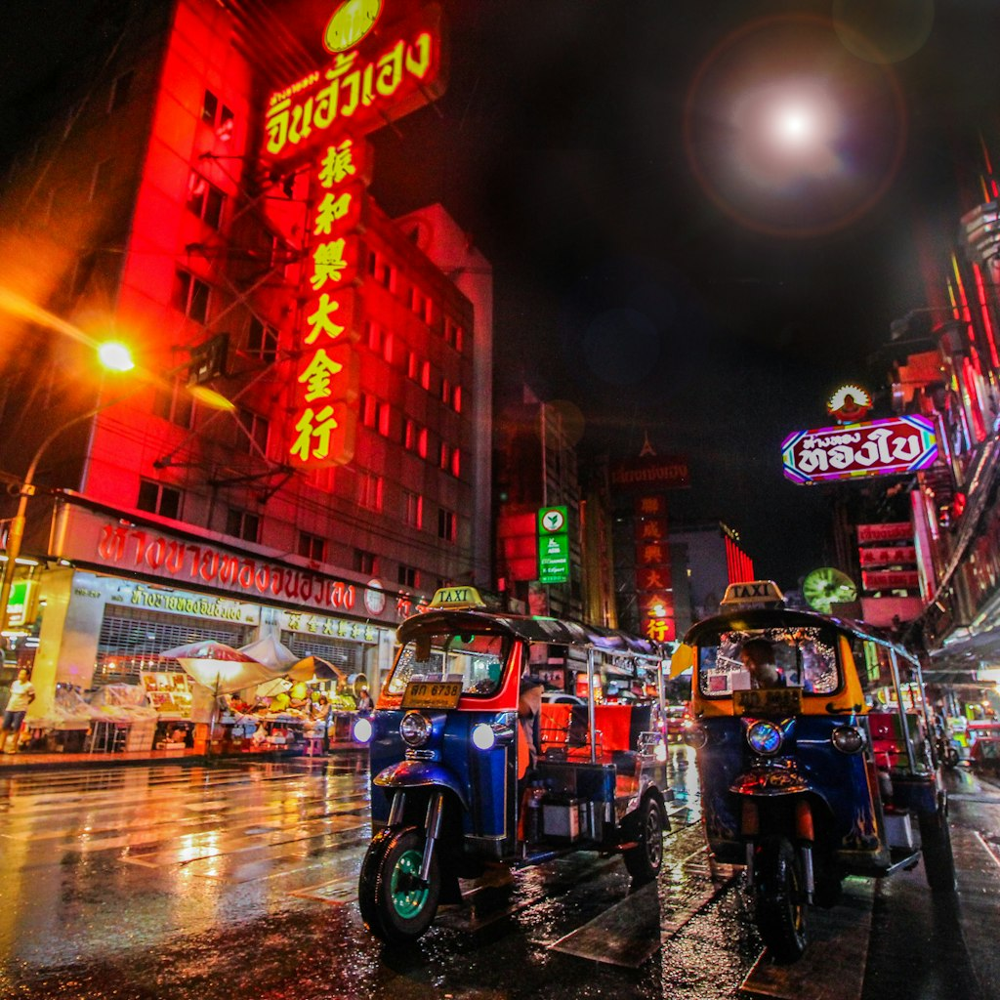
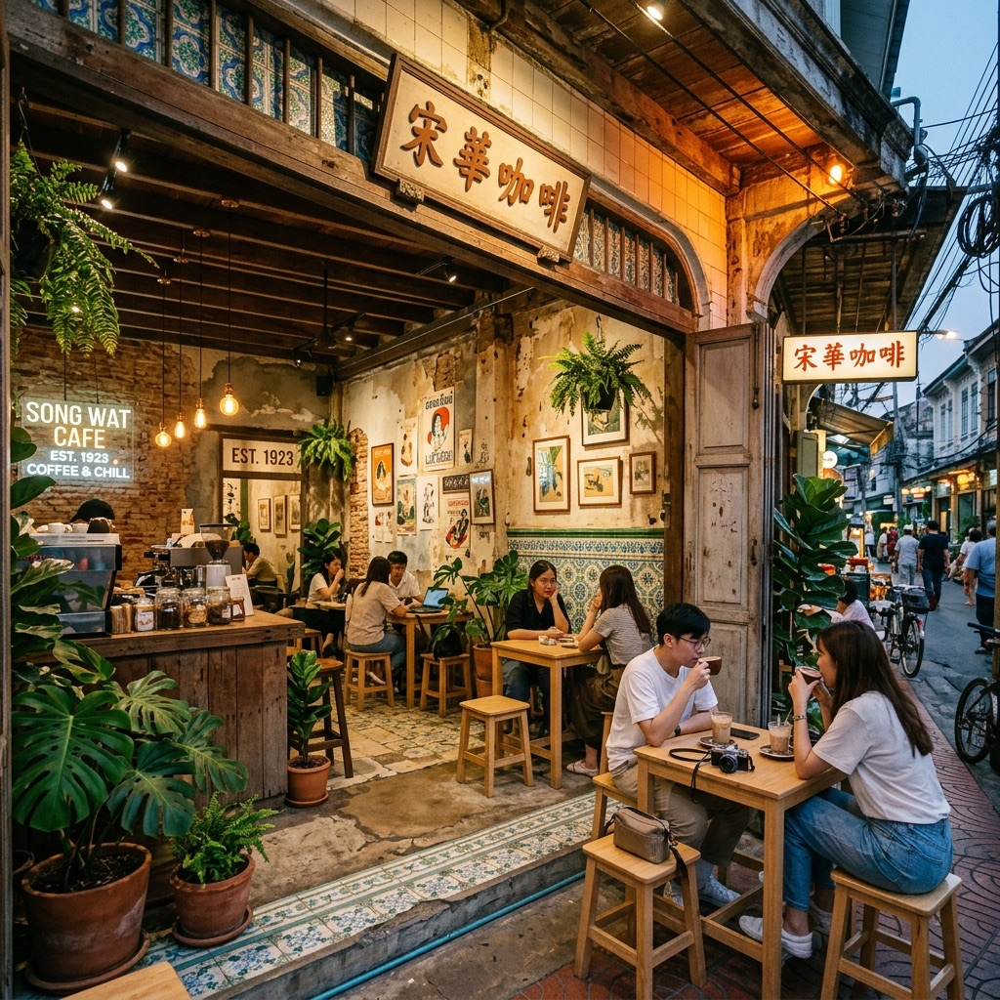
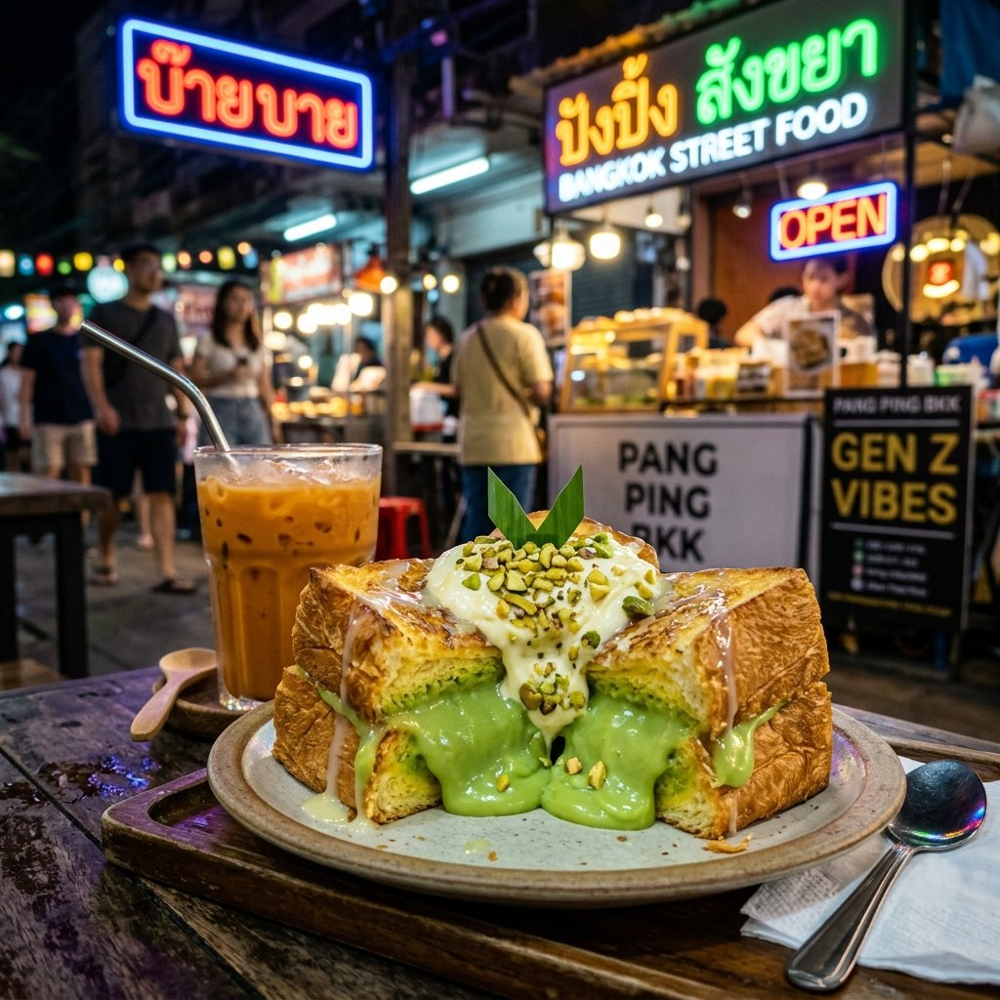
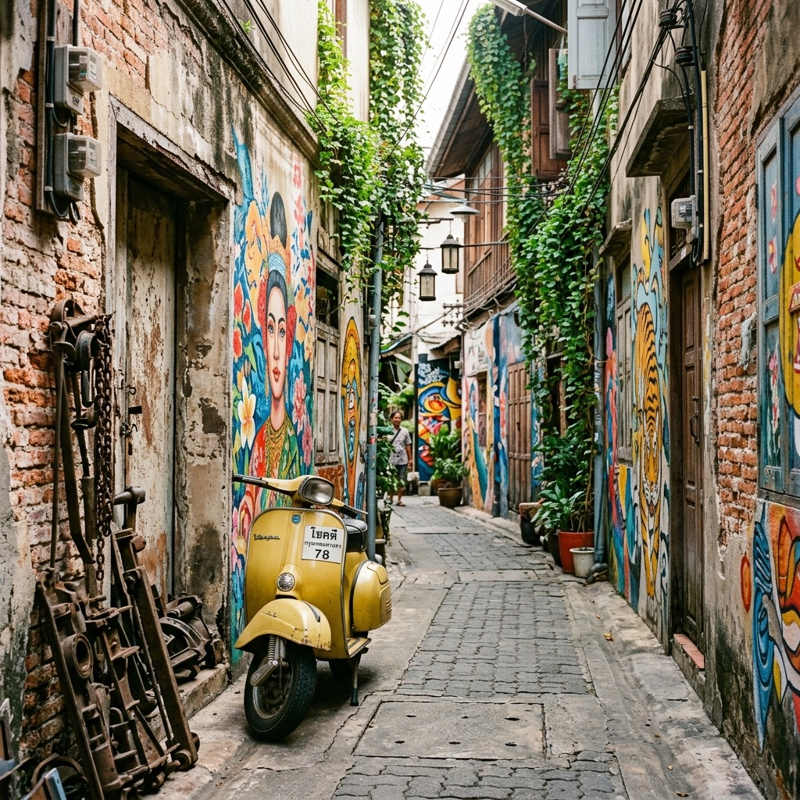

Bangkok for the 10+ time travelers
당신이 알던 방콕은 잊으세요. 11번째 방콕은 진짜 로컬이니까.
카오산로드와 왓아룬을 벗어나, 현지 Gen Z들이 숨겨두고 모이는 예술 골목 송왓부터 한밤중의 미식 성지 반탓통까지. 오직 방콕 베테랑을 위해 큐레이션된 비밀 리스트를 만나보세요.
The Self-Diagnosis
당신의 방콕 지수는 몇 %인가요?
10번을 다녀와도 몰랐던 숨겨진 사실들. 당신의 성향과 지식을 확인하고 등급을 받아보세요.
주말 오후, 당신이 가장 선호하는 방콕의 동네는?
YOUR BKK LEVEL
방콕 명예 타이인
이미 당신은 대중적인 명소는 꿰뚫고 로컬의 힙함을 본능적으로 찾는 방콕 고수입니다! 아래 가이드에서 당신의 감성을 저격할 성지들을 확인해보세요.
Handpicked Hotspots
가장 뜨거운 로컬 골목 3가지 큐레이션
방콕 현지 크리에이터와 Gen Z 세대들이 주말마다 향하는 그들만의 숨겨진 거리를 소개합니다.
오래된 중국풍 상점가에 피어난 예술
차이나타운과 짜오프라야 강 사이에 호젓하게 늘어선 송왓길(Song Wat Road)은 현재 방콕에서 가장 스타일리시하고 영감을 주는 핫플레이스입니다. 1900년대 초 건설된 낡은 중국식 건축물들의 외관은 보존한 채, 내부는 힙한 커피 로스터리, 인디 미술 갤러리, 커스텀 디자인 샵들로 가득 차 있습니다.
Song Wat Coffee Roasters (SWCR)
송왓 감성의 발원지. 극도로 묵직하고 완성도 높은 빈티지 에스프레소 바.
PLAY Art House
방콕 현지 신진 작가들의 파격적인 페인팅과 공예를 다루는 크리에이티브 공간.
Rong Klan Nuea (롱끌란느아)
압도적인 비주얼의 전통 한약재 비프 수프 누들을 힙한 올드빌딩에서 맛보는 곳.

자정을 넘긴 한밤중의 미식 카니발
야오와랏의 번잡한 외국 관광객 인파가 피곤하다면 바로 이곳입니다. 쭐랄롱꼰 대학교 인근의 반탓통(Ban That Thong)은 저녁 4시부터 활기를 띠기 시작해 새벽까지 현지 젊은이들이 야식과 달콤한 디저트를 찾아 끝없이 대기 줄을 형성하는 활기찬 진짜 로컬 먹자골목입니다.
Nueng Nom Nua (능놈느아)
버터 풍미 가득한 촉촉 쫄깃한 두꺼운 토스트에 홈메이드 판단 커스터드를 찍어 먹는 긴 대기 필수 맛집.
Jeh O Chula (제오쭐라)
미슐랭 빕구르망의 끝판왕. 자정 근처에만 파는 궁극의 대형 해물 똠얌 라면.
Ann Guay Tiew Kua Gai
바삭하게 튀기듯 볶아낸 태국식 치킨 에그 누들의 진수, 현지인들의 소울푸드.

녹슨 엔진 기계들과 빈티지 벽화 사이로
방콕에서 가장 오래된 역사를 자랑하는 주거 지역 중 하나인 탈랏노이(Talat Noi)는 낡은 자동차 엔진 부품과 기름 냄새가 가득한 골목길에 인스타그램용 벽화, 모던 찻집, 숨겨진 뷰 카페들이 얽혀 있는 놀랍고 독특한 대조의 공간입니다.
Citizen Tea House
태국의 전통 수제 텍스타일 소품과 진한 시그니처 타이 밀크티를 파는 극도의 힙 오렌지 인테리어 찻집.
Mother Roaster
엔진 기계 부품이 산더미처럼 쌓인 1층 골목 구석을 올라가면 나타나는, 노년의 바리스타가 내려주는 감동적인 핸드드립 전문점.
Baan Rim Naam (반림남)
버려진 창고를 로컬 라이브 음악과 전통 태국 남부 요리가 함께하는 강변 힐링 명소로 탈바꿈한 예술 공간.

Social Signal Analysis
지금 방콕에서 가장 뜨거운 신호
TikTok 촬영배경 위치태그와 Instagram Reels 해시태그를 주 2회 집계해, Gen Z가 실제로 모이는 골목과 콘텐츠 소비 패턴을 수치로 추적합니다.
Chinatown & Thonglor After Dark
자정 이후에 열리는 스피크이지 & hi-fi 바이닐 바
대중적인 클럽이나 루프탑 바를 벗어나 방콕의 힙스터, 예술가, 패션 피플들이 진지하게 음악과 특별한 향의 주류를 즐기기 위해 찾는 어두운 뒷골목 스피크이지 바입니다.
Freaking Out The Neighborhood
통로 골목의 빈티지 레코드 바. LP 판이 돌며 흘러나오는 사이키델릭 록과 로파이 힙합, 로컬 크래프트 맥주와 하이볼 한 잔.
Teens of Thailand
차이나타운 소이 나나 골목에 꼭꼭 숨은, 방콕 최초의 하이엔드 진(Gin) 바. 매일 현지 약초와 열대 과일로 레시피가 바뀌는 믹솔로지 진토닉의 세계.
Tax Bar
태국의 무거운 술세금에 저항한다는 힙한 콘셉트의 바. 식초(Vinegar)와 각종 과실 발효액을 베이스로 해 어디서도 먹어보지 못한 신맛의 칵테일 제조.
Interactive Route Builder
고수의 방콕 24시간 커스텀 여정
당신의 오늘의 여행 취향을 골라보세요. 방콕을 손바닥 들여다보듯 꿰고 있는 로컬 고수의 최적화된 하루 동선과 타임라인을 구성해 드립니다.
From Feed to Cart
그 골목의 소비재, 바로 연결
핫플레이스에서 본 그 커피, 그 디저트, 그 굿즈. 위치·가격·쿠폰을 한 카드에 모아 현지 샵으로 바로 연결합니다.
* 가격·쿠폰은 변동될 수 있으며, 외부 링크는 각 샵의 공식 채널로 연결됩니다. 결제는 현지 샵에서 직접 진행됩니다.